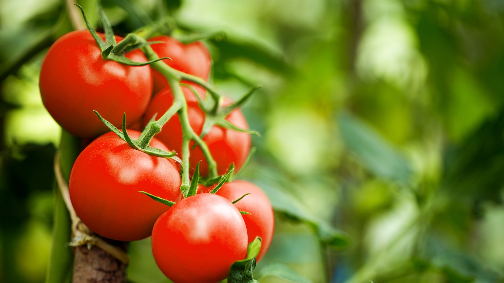

Tomato
The tomato is the edible berry of the plant Solanum lycopersicum, commonly known as a tomato plant. The species originated in western South America and Central America. The Mexican Nahuatl word tomatl gave rise to the Spanish word tomate, from which the English word tomato derived.

Potato
The potato is one of some 150 tuber-bearing species of the genus Solanum (a tuber is the swollen end of an underground stem). The compound leaves are spirally arranged; each leaf is 20–30 cm (about 8–12 inches) long and consists of a terminal leaflet and two to four pairs of leaflets.

Peas
A pea is a most commonly green, occasionally golden yellow, or infrequently purple pod-shaped vegetable, widely grown as a cool-season vegetable crop. The seeds may be planted as soon as the soil temperature reaches 10 °C (50 °F), with the plants growing best at temperatures of 13 to 18 °C (55 to 64 °F).